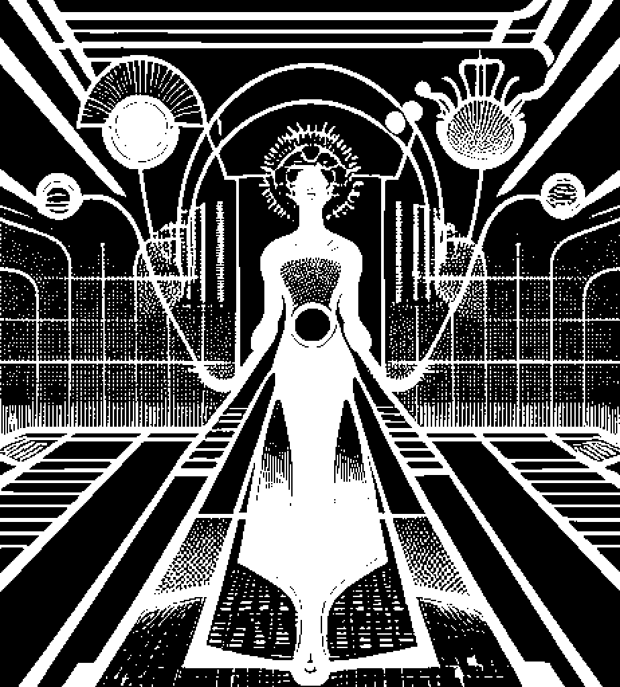

BLACK
SKY
SOCIETY
Black Sky is a society of thinkers, artists, mystics,
and technologists hacking the matrix of subquantum reality
to reengineer spacetime. As a society, we look toward the
horizon—10, 20, even 100 years from now—on a journey
marked by Psychodestiny, where the veil of the present
lifts and we peer resolutely into a future where privacy
and freedom coexists within a reality where we aim rockets
outward the stars, not against each other.
EXPLORATIONS
Our exploratory realm spans internet and computing technologies, meta/physics, knowledge expansion, and peace. We foresee an interconnected network of research & arts centers unified around the Six Tenets of Transcendence, Liberty, Autonomy, Interdependence, Adaptivity, and Resilience.
SIX TENETS
The Six Tenets of Black Sky Society are the higher-level principles that align people to be a part of our society, specifically when it comes to approaching the Six Topics together. We expect that, over time, we will find allied organizations around our Six Topics. However, whether one joins a Black Sky Society guild on a longer-term basis is based on individual alignment with these distinguishing tenets.

POST-WEB
Post-web is an emerging vision for the future of internet connectivity that prioritizes local-first, peer-to-peer, private, resilient, and interoperable networks. Privacy and individual sovereignty over personal data are paramount. Additionally, we anticipate the use of multiple cryptocurrencies through a heterogeneous, privacy-preserving financial transport layer. Rather than inventing a new blockchain ecosystem, Post-web is a principles-based movement that will be put into motion through a decentralized systems engineering experiment, drawing upon open knowledge and community research as the core of its development process.We are actively seeking collaboration with researchers and artists that share our vision to help shape the Post-web. Furthermore, we are calling upon the support of individuals and organizations with the capacity to fund our research network. Your financial contributions are crucial to accelerating this experiment.

NETWORK SOCIETIES
Mechanism design to support arts & research based network societies, where results of the scientific experiments will be openly patented, rather than kept as proprietary intellectual property. Motive to reforming work and monetary relationships with transformative autonomous organizations, collective intelligence, knowledge sharing, and education reform.
COSMIC DISCOVERY
future

PSYCHIC EVOLUTION
Developing the field of Psychic Engineering by advancing how contact is made with intelligences that cannot be seen or observed with traditional technologies. Establishing a new science of Irrational Mechanics, where to increase our understanding of the nature of reality.

QUANTUM SUPERINTELLIGENCE
The road towards personal quantum computers, superintelligence, and designing experiments based on our current understanding of physics to increase our understanding of the nature of reality.
PLANETARY SYMBIOSIS
future
With unwavering determination, we seek to explore the untapped potential of the human mind and the mysteries of the cosmos.